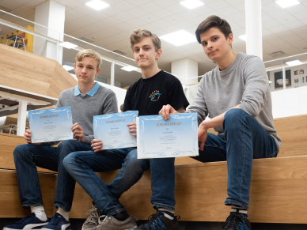

Datatähti 2020 -loppukilpailu järjestettiin 9.2.2020 Aalto-yliopiston tietotekniikan laitoksella. Loppukilpailuun osallistui 21 kilpailijaa alkukilpailusta.
Loppukilpailussa oli 4 tuntia aikaa ratkaista 6 ohjelmointitehtävää. Jokaisesta tehtävästä pystyi saamaan 0–100 pistettä.
Loppukilpailun tulokset ovat tässä:
| sija | nimi | koulu | pisteet |
|---|---|---|---|
| 1 | Roope Salmi | Otaniemen lukio | 600 |
| 2 | Henrik Aalto | Munkkiniemen yhteiskoulu | 547 |
| 3 | Unto Karila | Tapiolan lukio | 356 |
| 4 | Juho Röyskö | Päivölän opisto | 295 |
| 5 | Pauli Kauro | Kaurialan lukio | 266 |
| 6 | Valtteri Aurela | Otaniemen lukio | 239 |
| 7 | Antti Paraoanu | Etelä-Tapiolan lukio | 218 |
| 8 | Aleksi Hannula | Lyseonpuiston lukio | 166 |
| 9 | Aaron Äärelä | Kotkan lyseo | 147 |
| 10 | Antti Pham | Tampereen teknillinen lukio | 139 |
| 11 | Pekka Hautaniemi | Lappeenrannan lyseon lukio | 139 |
| 12 | Samu Huovinen | Joensuun normaalikoulun lukio | 129 |
| 13 | Into Almiala | Otaniemen lukio | 125 |
| 14 | Patrik Palviainen | Joensuun lyseon lukio | 125 |
| 15 | Jesperi Luoto | Otaniemen lukio | 118 |
| 16 | Hermanni Huhtamäki | Ähtärin lukio | 100 |
| 17 | Tuomas Simula | Otaniemen lukio | 100 |
| 18 | Stepan Fedotov | Munkkiniemen yhteiskoulu | 100 |
| 19 | Antti Mäkimattila | Kerttulin lukio | 100 |
| 20 | Tuomas Nummela | Etelä-Tapiolan lukio | 100 |
| 21 | Eero Salla | Ounasvaaran lukio | 100 |